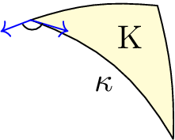
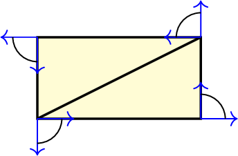

Gauss-Bonnet theorem
This notebook discusses the Gauss-Bonnet theorem for smooth manifolds without boundary, with a smooth boundary, and piecewise smooth boundary with vertices. The arising curvature quantities are the Gauss curvature of the manifold, the geodesic curvature on the smooth part of the boundary, and the angle defect (angle deficit) at the non-smooth vertices of the boundary. The Gauss-Bonnet theorem relates the curvature of a surface \(\mathcal{S}\) with a topological quantity. More precisely, the Gauss-Bonnet theorem holds for two-dimensional Riemannian manifolds, but we consider two-dimensional surfaces embedded in \(\mathbb{R}^3\) for visualisation.
Surfaces without a boundary
For closed smooth surfaces \(\mathcal{S}\) without a boundary, i.e. \(\partial\mathcal{S}=\emptyset\), there holds with the Gauss curvature \(K\) the following version of the Gauss-Bonnet theorem: \begin{align*} \int_{\mathcal{S}}K\,ds = 2\pi\chi_{\mathcal{S}}. \end{align*} Here \(\chi_{\mathcal{S}}\) is the Euler characteristic of the surface, a topological quantity. For a triangulation of \(\mathcal{S}\) the Euler characteristic can be computed with the formula \(\chi_{\mathcal{S}}=\# T-\# E + \# V\), i.e., the number of triangles minus number of edges plus number of vertices. It is related to the genus \(g\) of a connected closed surface (‘’number of holes’’). For orientable surfaces there holds \(\chi_{\mathcal{S}}=2-2g\).
We investigate some closed surfaces.
[1]:
from ngsolve import *
from netgen.occ import *
from ngsolve.webgui import Draw
# polynomial order for curving the surface
order = 4
# utility function to compute the Gauss curvature on a surface
def GaussCurvature():
nsurf = specialcf.normal(3)
return Cof(Grad(nsurf)) * nsurf * nsurf
For a sphere of radius \(R>0\) the Gauss curvature is \(K=\frac{1}{R^2}\) and its Euler characteristic \(2\) (genus \(g=0\), no holes). We observe that the integral does not perfectly fit with the expected value. However, it gets way more accurate if we approximate the surface by a higher polynomial degree (or generate a finer mesh). We will understand why this happens later in this notebook.
[2]:
sphere = Sphere((0, 0, 0), 3).faces[0]
mesh = Mesh(OCCGeometry(sphere).GenerateMesh(maxh=0.4)).Curve(order)
Draw(mesh)
print(
f"int_S K = {Integrate(GaussCurvature() * ds, mesh)} = 4*pi = {4 * pi}"
f" = 2*pi*(#T-#E+#V) = {2 * pi * (mesh.nface - mesh.nedge + mesh.nv)}",
)
int_S K = 12.566702932823457 = 4*pi = 12.566370614359172 = 2*pi*(#T-#E+#V) = 12.566370614359172
An ellipsoid is topologically equivalent to a sphere. Therefore, we expect it to have the same Euler characteristic.
[3]:
ell = Ellipsoid(Axes((0, 0, 0), X, Y), 0.75, 1 / 2, 1 / 3).faces[0]
mesh = Mesh(OCCGeometry(ell).GenerateMesh(maxh=0.07)).Curve(order)
Draw(mesh)
print(
f"int_S K = {Integrate(GaussCurvature() * ds, mesh)} = 4*pi = {4 * pi}"
f" = 2*pi*(#T-#E+#V) = {2 * pi * (mesh.nface - mesh.nedge + mesh.nv)}",
)
int_S K = 12.572887860639069 = 4*pi = 12.566370614359172 = 2*pi*(#T-#E+#V) = 12.566370614359172
A torus has Euler characteristic \(\chi_{\mathcal{S}}=0\). Its genus is \(g=1\) as it has one hole.
[4]:
circ = WorkPlane(Axes((3, 0, 0), -Y, X)).Circle(1).Face()
torus = Revolve(circ, Axis((0, 0, 0), (0, 0, 1)), 360)
torus.faces.name = "torus"
mesh = Mesh(OCCGeometry(torus.faces[0]).GenerateMesh(maxh=0.8)).Curve(order)
Draw(mesh)
print(
f"int_S K = {Integrate(GaussCurvature() * ds, mesh)} = 0"
f" = 2*pi*(#T-#E+#V) = {2 * pi * (mesh.nface - mesh.nedge + mesh.nv)}",
)
int_S K = 0.017253064926507904 = 0 = 2*pi*(#T-#E+#V) = 0.0
Gauss-Bonnet for non-closed and non-smooth surfaces
Let’s try combining two tori such that the Euler characteristic changes to \(-2\) because now two holes are present.
[5]:
torus2 = Translation((6.5, 0, 0))(torus)
torus2.faces.name = "torus2"
two_torus = Glue((torus2 - torus).faces["torus2"] + (torus - torus2).faces["torus"])
mesh = Mesh(OCCGeometry(two_torus).GenerateMesh(maxh=1)).Curve(order)
Draw(mesh)
print(
f"int_S K = {Integrate(GaussCurvature() * ds, mesh)} = 2 * pi * (2 - 4)"
f" = {2 * pi * (2 - 4)} = 2*pi*(#T-#E+#V) = {2 * pi * (mesh.nface - mesh.nedge + mesh.nv)}",
)
int_S K = -4.099770502767808 = 2 * pi * (2 - 4) = -12.566370614359172 = 2*pi*(#T-#E+#V) = -12.566370614359172
The computation by counting the number of triangles, edges, and vertices matches the expected value. However, the integral of the Gauss curvature does not. Why?
The generated surface is not smooth at the interface!
For non-closed and non-smooth surfaces, the Gauss-Bonnet theorem takes a different form: \begin{align*} \int_{\mathcal{S}}K\,ds + \int_{\partial \mathcal{S}}\kappa_g\,dl = 2\pi\chi_{\mathcal{S}}, \end{align*} where \(\kappa_g\) denotes the geodesic curvature of the boundary curve \(\partial \mathcal{S}\) We must include the geodesic curvature at the non-smooth interface from both sides of the tori to obtain the correct results. We recall that with the tangent vector \(t\) and co-normal vector \(\mu\) the geodesic curvature is given by \begin{align*} \kappa_g = \nabla_tt\cdot \mu. \end{align*} Note that for a smooth surface, at least \(C^1\), the geodesic curvature computed along a curve inside the manifold coincides when computed from both sides up to a sign (the co-normal vector changes its orientation). Then, the sum of the geodesic curvatures cancels out.
Let’s try the previous example, but now including the geodesic curvature. Now, the result looks good again.
[6]:
mu = Cross(specialcf.normal(3), specialcf.tangential(3))
# for geodesic curvature
edge_curve = specialcf.EdgeCurvature(3) # nabla_t t
print(
f"int_S K + int_{{dS}} k_g = {Integrate(GaussCurvature() * ds, mesh)}"
f" + {Integrate(-edge_curve * mu * ds(element_boundary=True), mesh)}"
f" = {Integrate(GaussCurvature() * ds - edge_curve * mu * ds(element_boundary=True), mesh)}"
)
int_S K + int_{dS} k_g = -4.099770502767808 + -8.477226902598067 = -12.576997405365876
Gauss-Bonnet for surfaces with piecewise smooth boundary
Consider a flat rectangle. It is topologically equivalent to the half-sphere. Thus \(\chi_{\mathcal{S}}=1\). However, it has zero Gauss and geodesic curvature. To account for the non-smooth boundary of the rectangle, we extend the Gauss-Bonnet theorem to its general form \begin{align*} \int_{\mathcal{S}}K\,ds + \int_{\partial \mathcal{S}}\kappa_g\,dl + \sum_{\mathrm{vertices}\,V}(\pi-\varepsilon_V)= 2\pi\chi_{\mathcal{S}}. \end{align*} Here, we sum over all vertices, where the boundary is non-smooth and compute the jump angle \(\varepsilon_V\), which measures the angle from the incoming tangent vector to the outgoing tangent vector. The interior angle used in the Gauss-Bonnet theorem is given by \(\pi-\varepsilon_V\). For a smooth triangulation of a smooth manifold, the sum of the jump angles at a vertex \(V\) will add up to \(2\pi\). However, for a non-smooth surface, like we are considering, the sum won’t be \(2\pi\). Thus, we can define the so-called angle defect \(\sphericalangle_V\) as \begin{align*} \sphericalangle_V = 2\pi-\sum_{T\supset V}\sphericalangle_V^T,\qquad \sphericalangle_V^T= \arccos(t_1,t_2), \end{align*} where \(t_1\) and \(t_2\) are the two unit tangent vectors starting at \(V\) and going in direction of the edges attached to \(V\) on the element \(T\).
In summary, we need to consider the Gauss curvature, geodesic curvature, and the interior angle for the Gauss-Bonnet theorem, visualized in the following picture. Thus, all these quantities are tightly connected to each other.

For the rectangle, each of its four vertices has an angle of \(\frac{\pi}{2}\) and thus some up to \(2\pi\) such that Gauss-Bonnet is again fulfilled.

[7]:
# auxiliary function to compute the angle deficit of the interior vertices
# and the interior angle for boundary vertices of a surface
def ComputeAngleDeficit(mesh, correct_bnd_vertices=False, draw=False):
bbnd_tang = specialcf.VertexTangentialVectors(3)
bbnd_tang1 = bbnd_tang[:, 0]
bbnd_tang2 = bbnd_tang[:, 1]
fesH = H1(mesh, order=1)
_, v = fesH.TnT()
f = LinearForm(v * acos(bbnd_tang1 * bbnd_tang2) * ds(element_vb=BBND)).Assemble()
gf_angle_def = GridFunction(fesH)
# angle deficit at interior vertices
for i in range(len(gf_angle_def.vec)):
gf_angle_def.vec[i] = 2 * pi - f.vec[i]
# corrrect angle for boundary vertices
if correct_bnd_vertices:
for el in fesH.Elements(BBND):
for d in el.dofs:
gf_angle_def.vec[d] -= pi / 2
if draw:
Draw(gf_angle_def, mesh, "angle_deficit")
return gf_angle_def
mesh = Mesh(OCCGeometry(Rectangle(2, 1).Face(), dim=3).GenerateMesh(maxh=0.4))
Draw(mesh)
gf_angle_def = ComputeAngleDeficit(mesh, correct_bnd_vertices=True, draw=True)
print(
f"int_S K + int_{{dS}} k_g = "
f"{Integrate(GaussCurvature() * ds - edge_curve * mu * ds(element_boundary=True), mesh) + sum(gf_angle_def.vec)}"
f" = 2*pi = {2*pi} = 2*pi*(#T-#E+#V) = {2 * pi * (mesh.nface - mesh.nedge + mesh.nv)}"
)
int_S K + int_{dS} k_g = 6.283185307179734 = 2*pi = 6.283185307179586 = 2*pi*(#T-#E+#V) = 6.283185307179586
If we round the edges such that a C1-boundary is obtained, the geodesic curvature \(\kappa_g\) includes all curvature information. Thus, the vertex contributions can be seen as the limit of geodesic curvatures (magnitude \(\frac{1}{\varepsilon}\)) integrated over the circle part (magnitude \(\varepsilon\)).
[8]:
wp = WorkPlane()
wp.Line(1.6).Arc(0.2, 90)
wp.Line(0.6).Arc(0.2, 90)
wp.Line(1.6).Arc(0.2, 90)
wp.Line(0.6).Arc(0.2, 90)
face = wp.Face()
mesh = Mesh(OCCGeometry(face, dim=3).GenerateMesh(maxh=2)).Curve(order)
Draw(mesh)
print(
f"int_S K + int_{{dS}} k_g = "
f"{Integrate(GaussCurvature() * ds - edge_curve * mu * ds(element_boundary=True), mesh)} = {pi * 2}"
f" = 2*pi*(#T-#E+#V) = {2 * pi * (mesh.nface - mesh.nedge + mesh.nv)}"
)
int_S K + int_{dS} k_g = 6.289394080128498 = 6.283185307179586 = 2*pi*(#T-#E+#V) = 6.283185307179586
Gauss-Bonnet on more non-smooth surfaces
We apply the Gauss-Bonnet theorem to different non-smooth surfaces.
First, we have a cylinder surface consisting of three smooth surfaces glued together at two boundaries. The cylinder mantle has Gauss curvature zero and also the top and bottom flat circles. Thus, the different geodesic curvatures, when measured from the cylinder mantle, where the geodesic curvature is zero, and the circles, where it is the reciprocal of the circle radius, sum up to \(4\pi\). It is topologically equivalent to a sphere.
[9]:
cyl_vol = Cylinder((0, 0, 0), (0, 0, 1), 1, 2)
cyl = Glue([cyl_vol.faces[0], cyl_vol.faces[1], cyl_vol.faces[2]])
mesh = Mesh(OCCGeometry(cyl).GenerateMesh(maxh=1)).Curve(order)
Draw(mesh)
print(
f"int_S K = {Integrate(GaussCurvature() * ds, mesh)} \nint_{{dS}} k_g"
f" = {Integrate(-edge_curve * mu * ds(element_boundary=True), mesh)} \n2*pi*(#T-#E+#V)"
f" = {2 * pi * (mesh.nface - mesh.nedge + mesh.nv)}",
)
int_S K = 0.0014061761979716643
int_{dS} k_g = 12.573826270855013
2*pi*(#T-#E+#V) = 12.566370614359172
By smoothing the boundaries to be \(C^1\), the Gauss curvature contains all curvature information. Thus, the geodesic curvature can be understood as the limit of the Gauss curvature when the surface degenerates to a curve.
[10]:
cyl_curved = cyl_vol.MakeFillet(cyl.edges, 0.2).faces
mesh = Mesh(OCCGeometry(cyl_curved).GenerateMesh(maxh=1)).Curve(order)
Draw(GaussCurvature(), mesh)
print(
f"int_S K = {Integrate(GaussCurvature() * ds, mesh)} \nint_{{dS}} k_g"
f" = {Integrate(-edge_curve * mu * ds(element_boundary=True), mesh)} \n2*pi*(#T-#E+#V)"
f" = {2 * pi * (mesh.nface - mesh.nedge + mesh.nv)}",
)
int_S K = 12.597224467820945
int_{dS} k_g = -0.0305680670786335
2*pi*(#T-#E+#V) = 12.566370614359172
Next, we consider the surface of a box. Here, the Gauss curvature and geodesic curvature are zero. All curvature information sits in the eight corners of the box.
[11]:
cube = Box((0, 0, 0), (1, 1, 1))
mesh = Mesh(OCCGeometry(cube.faces).GenerateMesh(maxh=0.2))
Draw(mesh)
gf_angle_def = ComputeAngleDeficit(mesh, draw=True)
print(f"K = {Integrate(GaussCurvature() * ds, mesh)}")
print(f"kg = {Integrate(-edge_curve * mu * ds(element_boundary=True), mesh)}")
print(f"kV = {sum(gf_angle_def.vec)}")
print(
f"K + kg + kV = "
f"{Integrate(GaussCurvature() * ds - edge_curve * mu * ds(element_boundary=True), mesh) + sum(gf_angle_def.vec)}",
)
print(f"4*pi = {4 * pi}")
K = 0.0
kg = 9.131304725410944e-13
kV = 12.566370614359117
K + kg + kV = 12.56637061436003
4*pi = 12.566370614359172
We can smooth the vertices to obtain a smooth surface. Then, again, the Gauss curvature contains all curvature information. Thus, the angle defect can also be seen as a limit from the Gauss curvature.
[12]:
# try out using bonus_order = 0 and bonus_order = 10
bonus_order = 0
cube_curved = cube.MakeFillet(cube.edges, 0.2)
mesh = Mesh(OCCGeometry(Glue(cube_curved.faces)).GenerateMesh(maxh=1)).Curve(order)
Draw(mesh)
print(f"K = {Integrate(GaussCurvature() * ds(bonus_intorder=bonus_order), mesh)}")
print(
f"kg = {Integrate(-edge_curve * mu * ds(element_boundary=True, bonus_intorder=bonus_order), mesh)}",
)
gf_angle_def = ComputeAngleDeficit(mesh, draw=False)
print(f"kV = {sum(gf_angle_def.vec)}")
print(
f"K + kg + kV = {Integrate(GaussCurvature() * ds(bonus_intorder=bonus_order) - edge_curve * mu * ds(element_boundary=True, bonus_intorder=bonus_order), mesh,) + sum(gf_angle_def.vec)}",
)
print(f"4*pi = {4 * pi}")
K = 12.750119514496292
kg = -0.18235138482711769
kV = -7.881543728238682e-05
K + kg + kV = 12.567689314231892
4*pi = 12.566370614359172
Observation: As the mesh’s curving is not exact, the angle deficit and jump of geodesic curvature are small but not zero, and the Gauss curvature “misses” some curvature. The geodesic curvature and angle deficit repair this. For piecewise flat triangles, the Gauss and geodesic curvature are zero, so only the angle deficit has an impact.
Note: Use ‘’bonus_intorder’’ in the above cell for exact geodesic and Gauss curvature integration to get the exact values up to machine rounding-error precision.
Remark: There exists no Gauss-Bonnet theorem in three dimensions.
[ ]: